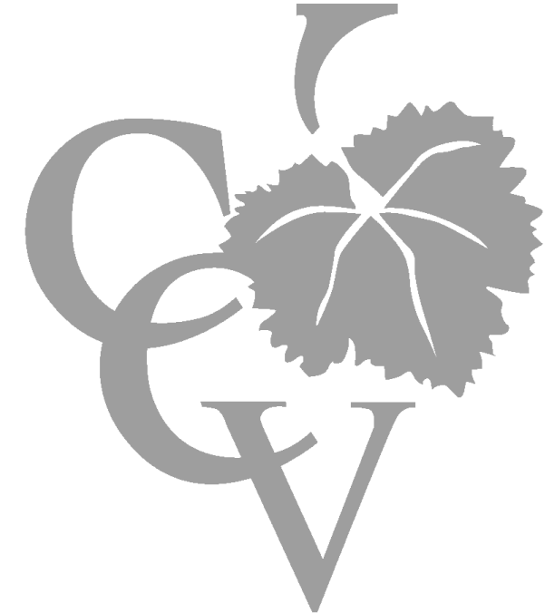

Medicion y análisis de fallas de transformadores de minas a rajo abierto
El proyecto contempló el análisis de fallas ocurridas en equipos de la primera línea de producción e incluyó mediciones en distintas ubicaciones del Sistema Eléctrico de Potencia. Luego de este trabajo se determinaron distintas líneas de acción para mejorar la confiablidad de la operación.

Dispositivo portátil para mediciones de fructosa y glucosa en cubas
El proyecto consistió en el diseño y construcción de un dispositivo portátil que permite medir instantáneamente la concentración de fructosa y glucosa en las cubas. El dispositivo permite acceder a información necesaria para mejorar la calidad del producto.
Sistema de control remoto para perforadora Atlas Copco
El proyecto contempló el diseño y la construcción de un control remoto para una perforadora Atlas Copco modelo Pit Viper de 20 metros de altura y 57 toneladas de peso. El producto le permite al cliente contar con una solución local de rápida implementación ante fallas y eventos no programados.